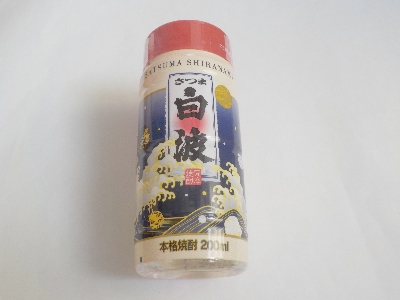
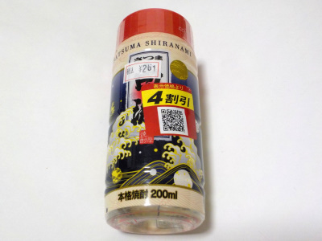

薩摩酒造のさつま白波。
2024/08/16

芋焼酎です。
久しぶりの芋焼酎です。芋焼酎はこんな味だったなーと思いながら飲みました。
美味しいですけど、焼酎の風味ってどう言ったらいいのか分からないです。サツマイモの味があるとか甘いとか言いますが、そうなのかな？と思ってます。
鹿児島県枕崎市立神本町26番地
2024/08/16

芋焼酎です。
久しぶりの芋焼酎です。芋焼酎はこんな味だったなーと思いながら飲みました。
美味しいですけど、焼酎の風味ってどう言ったらいいのか分からないです。サツマイモの味があるとか甘いとか言いますが、そうなのかな？と思ってます。
2023/03/10

そのままストレートで飲む用だと思うんですが、私には25度は濃かったです。
キツイって思うんですが、ちょっとずつたとストレートでも美味しく飲めました。
ストレートで飲んだ後、水で割って飲んだら薄くて物足りなかったです。
これは水を用意して、ストレートで飲んだ方がいいのかなと思いました。